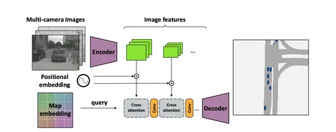

Сегодня обсудим статью о том, как решить задачу BEV-сегментации в camera-only-режиме.
Авторы используют данные нескольких камер, информацию об их фокусном расстоянии, повороте и расположении. Изображения с камер эмбеддятся и складываются с позиционными эмбеддингами: MLP поверх вектора, посчитанного с помощью информации о положении камеры. Он сонаправлен с осью объектива и проходит сквозь кодируемый пиксель.
Подход позволяет сэкономить время работы модели: учесть положение камеры относительно эго-машины и окружающего мира, не восстанавливая глубину эксплицитно.
Эмбеддинг BEV’а для каждой камеры свой. Это разность выучиваемого позиционного эмбеддинга BEV’а и MLP поверх позиции камеры относительно окружающего мира. Так query приводят в ту же модальность, что и позиционные эмбеддинги для изображений.
Авторы используют два блока с cross-attention’ом с последующим свёрточным слоем, чтобы модель глубже изучила данные. Учитывают q — эмбеддинг BEV’а, k — сумму позиционных эмбеддингов и фичей изображений, v — просто фичи изображений. В итоге за счёт скалярного произведения внутри attention’а предполагается, что модель учится имитировать косинусную близость между BEV’ом и информацией с камер, указывая каждой ячейке BEV-а на релевантную визуальную информацию.
В конце декодер из свёрток и upsample-блоков расшифровывает выход трансформера в плотную карту, для которой выполняется сегментация.
Благодаря отказу от реконструкции глубины авторам удалось добиться SOTA-результатов: x4 к скорости по сравнению с предыдущим топовым методом.
Разбор подготовила
404 driver not found
